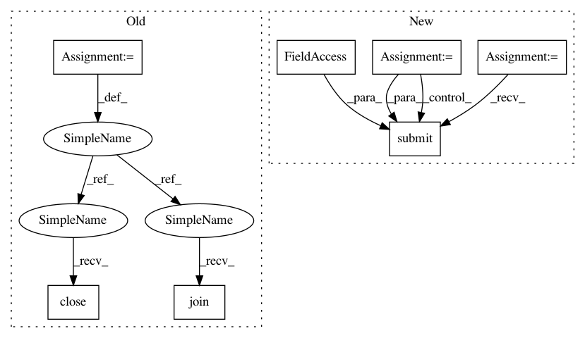

ce579cf021ca1ee0705bd9484aae55e0d110d0e7,cnvlib/commands.py,,_cmd_batch,#Any#,52
Before Change
len(args.bam_files),
("serial" if args.processes == 1
else ("%d processes" % args.processes)))
pool = parallel.pick_pool(args.processes)
for bam in args.bam_files:
pool.apply_async(batch_run_sample,
(bam, args.targets, args.antitargets, args.reference,
args.output_dir, args.male_reference, args.scatter,
args.diagram, args.rlibpath, args.count_reads,
args.drop_low_coverage, args.method))
pool.close()
pool.join()
def batch_make_reference(normal_bams, target_bed, antitarget_bed,
male_reference, fasta, annotate, short_names,
After Change
("serial" if args.processes == 1
else ("%d processes" % args.processes)))
with parallel.pick_pool(args.processes) as pool:
for bam in args.bam_files:
pool.submit(batch_run_sample,
bam, args.targets, args.antitargets, args.reference,
args.output_dir, args.male_reference, args.scatter,
args.diagram, args.rlibpath, args.count_reads,
args.drop_low_coverage, args.method)
def batch_make_reference(normal_bams, target_bed, antitarget_bed,
male_reference, fasta, annotate, short_names,
target_avg_size, access, antitarget_avg_size,
antitarget_min_size, output_reference, output_dir,
In pattern: SUPERPATTERN
Frequency: 3
Non-data size: 7
Instances
Project Name: etal/cnvkit
Commit Name: ce579cf021ca1ee0705bd9484aae55e0d110d0e7
Time: 2016-09-08
Author: eric.talevich@gmail.com
File Name: cnvlib/commands.py
Class Name:
Method Name: _cmd_batch
Project Name: etal/cnvkit
Commit Name: ce579cf021ca1ee0705bd9484aae55e0d110d0e7
Time: 2016-09-08
Author: eric.talevich@gmail.com
File Name: cnvlib/commands.py
Class Name:
Method Name: _cmd_batch
Project Name: etal/cnvkit
Commit Name: ce579cf021ca1ee0705bd9484aae55e0d110d0e7
Time: 2016-09-08
Author: eric.talevich@gmail.com
File Name: cnvlib/commands.py
Class Name:
Method Name: batch_make_reference
Project Name: danforthcenter/plantcv
Commit Name: e628b2e6c566b9dd70d8eab50c00df23bb0cecea
Time: 2020-08-17
Author: noahfahlgren@gmail.com
File Name: plantcv/parallel/multiprocess.py
Class Name:
Method Name: multiprocess